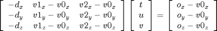
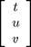
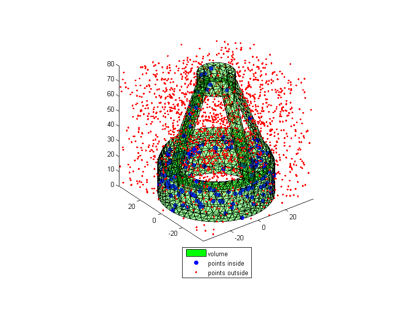

Tutorial and tests of IN_POLYHEDRON function
By Jarek Tuszynski (jaroslaw.w.tuszynski@leidos.com)
IN_POLYHEDRON tests if points are inside a 3D triangulated surface (faces/vertices) or volume (tetrahedrals/vertices). There are NO assumptions about orientation of the face normals.
IN = INPOLYHEDRON(X,POINTS) tests if the query points (POINTS) are inside the surface/polyhedron defined by X. X can be a structure with fields 'vertices' and 'faces' or an object of MATLAB triangulation class. In case of triangulation class object we will only use the outside boundary. POINTS is an N-by-3 set of XYZ coordinates. IN is an N-by-1 logical vector which will be TRUE for each query point inside the surface.
INPOLYHEDRON(FACES,VERTICES,POINTS) takes faces/vertices separately, rather than in an FV structure.
Contents
Algorithm
For each point do:
- shoot a random ray out of the query point in a random direction
- for each face solve:  for . d is the ray direction. Variables u , v are barycentric coordinates and t/|d| is the distance from the intersection point to the ray origin. Ray/triangle intersect if all t, u, v and w=1-u-v are positive.
- count ray / surface intersections
- even number means inside and odd mean outside
- in rare case the ray hits one of the surface faces right on the edge repeat the process with a new ray
References
Based on * "Fast, minimum storage ray-triangle intersection". Tomas Möller and Ben Trumbore. Journal of Graphics Tools, 2(1):21--28, 1997. http://www.graphics.cornell.edu/pubs/1997/MT97.pdf (Ray/triangle intersection) * http://fileadmin.cs.lth.se/cs/Personal/Tomas_Akenine-Moller/raytri/raytri.c (Ray/triangle intersection) * Robert Sedgewick "Algorithms" (point in polygon algorithm)
Licence
The function is distributed under BSD License
format compact; % viewing preference clear variables; close all; rng('shuffle'); type('license.txt')
Copyright (c) 2014, Jaroslaw Tuszynski
All rights reserved.
Redistribution and use in source and binary forms, with or without
modification, are permitted provided that the following conditions are
met:
* Redistributions of source code must retain the above copyright
notice, this list of conditions and the following disclaimer.
* Redistributions in binary form must reproduce the above copyright
notice, this list of conditions and the following disclaimer in
the documentation and/or other materials provided with the distribution
THIS SOFTWARE IS PROVIDED BY THE COPYRIGHT HOLDERS AND CONTRIBUTORS "AS IS"
AND ANY EXPRESS OR IMPLIED WARRANTIES, INCLUDING, BUT NOT LIMITED TO, THE
IMPLIED WARRANTIES OF MERCHANTABILITY AND FITNESS FOR A PARTICULAR PURPOSE
ARE DISCLAIMED. IN NO EVENT SHALL THE COPYRIGHT OWNER OR CONTRIBUTORS BE
LIABLE FOR ANY DIRECT, INDIRECT, INCIDENTAL, SPECIAL, EXEMPLARY, OR
CONSEQUENTIAL DAMAGES (INCLUDING, BUT NOT LIMITED TO, PROCUREMENT OF
SUBSTITUTE GOODS OR SERVICES; LOSS OF USE, DATA, OR PROFITS; OR BUSINESS
INTERRUPTION) HOWEVER CAUSED AND ON ANY THEORY OF LIABILITY, WHETHER IN
CONTRACT, STRICT LIABILITY, OR TORT (INCLUDING NEGLIGENCE OR OTHERWISE)
ARISING IN ANY WAY OUT OF THE USE OF THIS SOFTWARE, EVEN IF ADVISED OF THE
POSSIBILITY OF SUCH DAMAGE.
Test if random points are inside or outside of the volume
defined by MATLAB test object "tetmesh"
load tetmesh; TR = triangulation(tet,X); [S.faces, S.vertices] = freeBoundary(TR); n = 2000; % number of points points = 80*rand(n,3) - repmat([40 40 0], n, 1); tic in1 = in_polyhedron(S, points); fprintf('Number of points inside is %i, outside is %i. Calculation time: %f sec\n', ... nnz(in1), nnz(in1==0), toc);
Number of points inside is 178, outside is 1822. Calculation time: 0.408611 sec
Plot results
figure, hold on, view(3) % Display the result set(gcf, 'Position', get(gcf, 'Position').*[0 0 1.5 1.5]) patch(S,'FaceColor','g','FaceAlpha',0.2) plot3(points( in1,1),points( in1,2),points( in1,3),'bo','MarkerFaceColor','b') plot3(points(~in1,1),points(~in1,2),points(~in1,3),'r.'), axis image legend({'volume', 'points inside', 'points outside'}, 'Location', 'southoutside')
Compare the results to the output of similar inpolyhedron function
by Sven Holcombe (http://www.mathworks.com/matlabcentral/fileexchange/37856) inpolyhedron function is usually faster but requires knowlege about the face normals.
if exist('inpolyhedron.m', 'file') tic in2 = inpolyhedron(S, points); fprintf('Number of points inside is %i, outside is %i. Calculation time: %f sec\n', ... nnz(in1), nnz(in1==0), toc); fprintf('Number of differences is %i\n', sum(in1~=in2)); end
Number of points inside is 178, outside is 1822. Calculation time: 0.115366 sec Number of differences is 0
Flip 50% of face normals and repeat
msk = rand(size(S.faces,1),1) > 0.5; S.faces(msk,:) = fliplr(S.faces(msk,:)); tic in3 = in_polyhedron(S, points); fprintf('Number of points inside is %i, outside is %i. Calculation time: %f sec\n', ... nnz(in1), nnz(in1==0), toc); fprintf('Number of differences is %i\n', sum(in1~=in3));
Number of points inside is 178, outside is 1822. Calculation time: 0.408758 sec Number of differences is 0